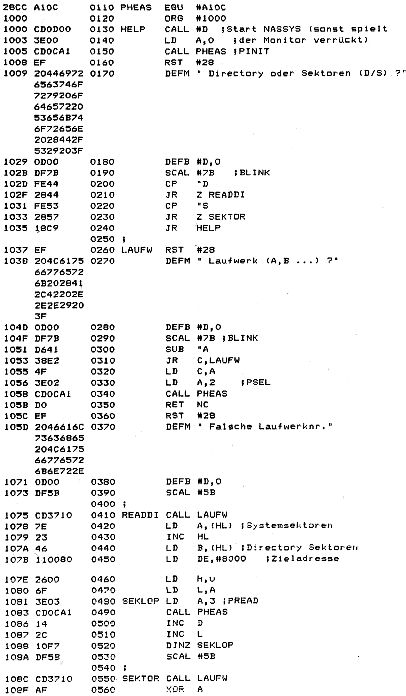

80-Bus Journal |
Okt./Nov./Dezember 1984 · Ausgabe 4 |
ZEAP Z80 Assembler – Source Listing 0010 ;HELP FÜR EMDOS 10.12.84 G.B. Köln 0020 ;---------------------------------------- 0030 ;kann DIRECTORY nach #8000 laden oder 0040 ;einzelne Sektoren in einen anzugebenden 0050 ;Speicherbereich laden oder nur ein 0060 ;Verify (jeden Sektor in die selben 0070 ;1/4K RAM laden) durchführen. 0080 ;Sektoren sind jeweils relativ zu den 0090 ;Systemspuren zu verstehen. 0100 ;----------------------------------------
Nach etlichen Stunden Arbeit ist es geschafft! Es läuft CP/M. Meine Erfahrungen sind wahrscheinlich auch für andere Journal-Leser von Interesse, aber leider habe ich im Augenblick nun absolut keine Zeit mehr für den Rechner; denn ich renoviere die Wohnung. So kann ich Ihnen ein erweiterungsbedürftiges BIOS zur Verfügung stellen, welches folgende Hardware voraussetzt:
Das BIOS benutzt Nassys für I/O, und so gibt es eine von uns vorgeschlagene ECB-Leitung NAS/CPM 19 a, die bei 0 Nassys usw. einblendet und bei 1 dyn. RAM . Im BIOS sind bereits die RAM-Disk Routinen für 3 mal 64K integriert. Ich verwende zunächst nur 64K RAM-Disk. Die Page-Adressierung erfolgt mit einem Latch (273) auf Port FF hex, wobei die unteren vier Bit die Page-Adresse und Bit7 die NAS/CPM-Leitung darstellt.
Vorläufig arbeitet das BIOS folgendermaßen:
Mein BIOS kennt keine Systemspuren, und so wird bei WBOOT und BOOT der CCP und das BDOS von der EPROM-Port-Karte geladen. Damit geht’s wesentlich schneller.
Der Videotreiber für die alte Nascom Bildschirmaufbereitung arbeitet mit DMA und kennt einige neue Control- Codes: INSERT LINE. DELETE LINE usw. Er ist jedoch im Listing durch den Nassys SCAL zu ersetzen.
Für das ausgezeichnete Turbo Pascal ist jedoch empfehlenswert, solche Control Codes zur Verfügung zu stellen. Mit obiger Hardware habe ich schon erfolgreich mit Turbo Pascal, M80, L80, M-BASIC, BASCOM, Wordmaster,
| Seite 24 von 52 |
|---|